Vaclav Petras, Anna Petrasova, Helena Mitasova, Markus Neteler
Sommario:
Software:
Data:
climate_2000_2012: serie di temperature e piogge per l'intero North CarolinaNagsHead_series: serie temporale di dati di elevazione derivati da dati lidarcentennial: DEM di una parte del campuse Centennial, NC State University, derivato da dati lidarTerminologia:
Note:
Avviare GRASS selezionando la location NC_spm_temporal_workshop ed il mapset climate_2000_2012. Per prima cosa elencheremo le mappe raster disponibili e visualizzeremo le prime mappe contenenti dati di pioggia e temperatura in modo da familiarizzare con queste informazioni.
g.list type=rast
g.mlist type=rast pattern="*tempmean"
g.mlist type=rast pattern="*precip"
All'interno del Layer Manager selezionare menu: File -> Map display -> Add raster (disponibile anche all'interno della toolbar) Selezionare la mappa raster 2000_01_tempmean' Display legend 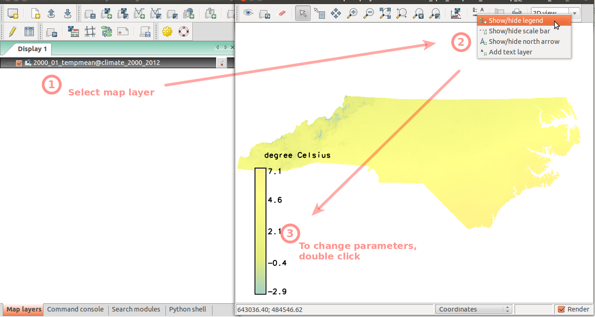# start monitor d.mon wx0 # display raster maps d.rast 2000_01_tempmean d.legend 2000_01_tempmean
Per gestiere al meglio la lunga serie di mappe, creeremo un dataset di tipo temporale che verrà utilizzato come un contenitore per l'intera serie. Questo permetterà di eseguire analisi in maniera globale invece di lavorare con mappe singole. Iniziamo creando due dataset di tipo STRDS (Space Time Raster DataSet) uno per ciascuna serie di mappe. Da notare che, in questo esempio, il tempo verrà utilizzato come valore assoluto.
t.create output=tempmean type=strds temporaltype=absolute title="Average temperature" description="Monthly temperature average in NC [deg C]"
t.create output=precip_sum type=strds temporaltype=absolute title="Preciptation" description="Monthly precipitation sums in NC [mm]"
A questo punto possiamo registrare la serie di mappe all'interno del dataset partendo dal 2000-01-01 e usando come intervallo temporale 1 mese. Per ottenere l'elenco di tutte le mappe raster che appartengono alla serie, usiamo il comando g.mlist creando due liste separate: una per la serie di temperature e l'altra per i dati di pioggia. Da tener presente che il comando g.mlist elenca le mappe in ordine alfabetico, ordine che nel nostro caso coincide con l'ordine temporale necessario.
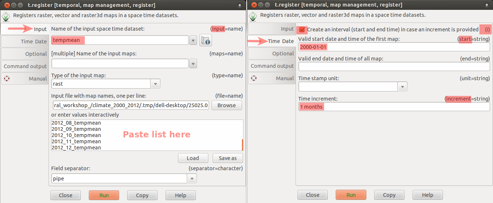 Prima di tutto fare click sul pulsante Pulisci sotto la finestra di Output in fondo al Layer Manager. A questo punto elencare tutte le mappe raster contenenti dati di temperatura con il comando g.mlist: g.mlist type=rast pattern="*tempmean" --quiet Dopo aver copiato (selezione, pulsante destro del mouse e copia) l'elenco delle mappe, possiamo avviare il comando t.register. L'elenco delle mappe andrà incollato nello spazio 'inserisci i valori interattivamente' e altri parametri dovranno essere impostati come segue: tab Input > Name of the input space time dataset > tempmean tab Time Date > Selezionare l'opzione Create an interval > Valid start date and time of the first map > 2000-01-01 > Time increment > 1 months La stessa cosa va fatta per i dati di pioggia, ricordandosi di fare click sul pulsante Pulisci in modo da eliminare le informazioni precedenti: g.mlist type=rast pattern="*precip" --quiet Copiare ed incollare il risultato nel campo relativo del comando t.register ed utilizzare i seguenti parametri: tab Input > input > precip_sum ab Time Date > Selezionare l'opzione Create an interval > Valid start date and time of the first map > 2000-01-01 > Time increment > 1 months# prima elenchiamo le mappe per controllare il pattern e l'output g.mlist type=rast pattern="*tempmean" separator=comma --quiet g.mlist type=rast pattern="*precip" separator=comma --quiet # quindi usiamo gli apici inversi per passare l'output direttamente a t.register t.register -i input=tempmean type=rast start=2000-01-01 increment="1 months" \ maps=`g.mlist type=rast pattern="*tempmean" separator=comma --quiet` t.register -i input=precip_sum type=rast start=2000-01-01 increment="1 months" \ maps=`g.mlist type=rast pattern="*precip" separator=comma --quiet`
Verifichiamo che i due dataset siano stati creati correttamente:
t.list type=strds
t.rast.list input=tempmean sep=tab
Nonostante si possa fare facilmente il parsing dell'output del comando t.rast.list, noi utilizzeremo il Timeline tool per visualizzare l'estensione temporale del dataset.
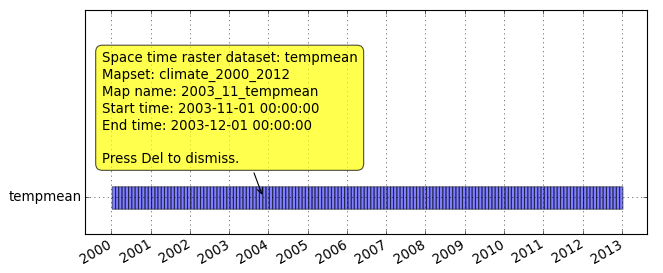Menu: Temporal -> GUI tools -> Timeline tool Selezionare il dataset tempmeang.gui.timeline tempmean
Ora andremo ad animare una parte del dataset. Prima estrarremo l'anno 2010 da entrambi i dataset; questa operazione non creerà un nuovo dataset, ma il nuovo punterà semplicemente al vecchio dataset.
t.rast.extract input=tempmean output=tempmean_2010 where="start_time >= '2010-01-01' and start_time < '2011-01-01'"
t.rast.extract input=precip_sum output=precip_sum_2010 where="start_time >= '2010-01-01' and start_time < '2011-01-01'"
Verificare l'estensione temporale:
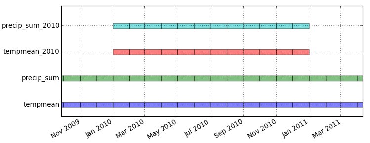Menu: Temporal -> GUI tools -> Timeline tool Select datasets tempmean, precip_sum, tempmean_2010, precip_sum_2010g.gui.timeline inputs=tempmean,precip_sum,tempmean_2010,precip_sum_2010
Creiamo un'animazione per i dati di pioggia relativi al 2010 (come nell'immagine):
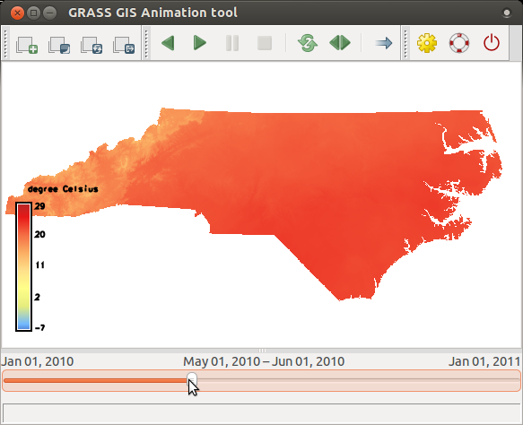
precip_sum_2010 seguendo le istruzioni in questo screenshot.
t.info precip_sum_2010t.info precip_sum_2010grass.read_command('t.info', input='precip_sum_2010')
+-------------------- Space Time Raster Dataset -----------------------------+ | | +-------------------- Basic information -------------------------------------+ | ... +-------------------- Absolute time -----------------------------------------+ | .. +-------------------- Spatial extent ----------------------------------------+ | ... +-------------------- Metadata information --------------------------------+ | Raster register table:...... raster_map_register_89c7821c3f174f3e965f481dfbd0c8d7 | North-South resolution min:. 500.0 | North-South resolution max:. 500.0 | East-west resolution min:... 500.0 | East-west resolution max:... 500.0 | Minimum value min:.......... 6.275055 | Minimum value max:.......... 84.408674 | Maximum value min:.......... 185.205301 | Maximum value max:.......... 436.309366 | Aggregation type:........... None | Number of registered maps:.. 12 | ...
t.rast.colors input=precip_sum_2010 color=precipitation_monthly
tempmean_2010 in modo da vedere pioggia e
temperature sincronizzate. Usando le stesse istruzioni presenti nello screenshot
, sostituiamo unicamente il dataset precip_sum_2010 con tempmean_2010.
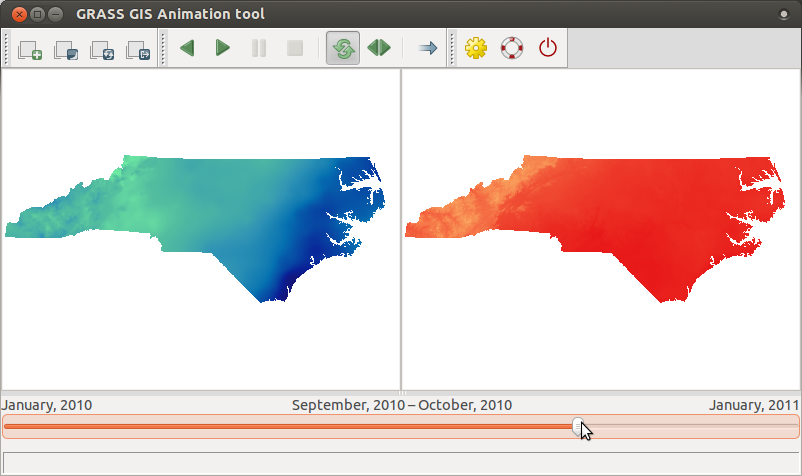
Ora torniamo indietro al dataset estratto e vediamo alcune altre possibilità per visualizzare i dati con t.rast.list. Possiamo, ad esempio, scegliere quali colonne stampare e l'ordine dei dati. In questo caso noi stampiamo start_time e massimo di pioggia ordinandole in maniera crescente. Il delimitatore di default (|), può essere cambiato con l'opzione sep.
# possiamo scegliere colonne ed ordine
t.rast.list input=precip_sum_2010 columns=start_time,max order=max sep=tab
Usando il comando t.rast.univar, calcoliamo informazioni statistiche riferite ad un intervallo temporale degli ultimi tre mesi dell'anno 2010.
t.rast.univar input=tempmean_2010 where="start_time > '2010-10-01'"
id|start|end|mean|min|max|mean_of_abs|stddev|variance|coeff_var|sum|null_cells|cells 2010_10_tempmean@climate_2000_2012|2010-10-01 00:00:00|2010-11-01 00:00:00|16.2275459748922|9.80648888481988|19.2237726847331|16.2275459748922|1.83784116074554|3.37766013213051|11.3254410962021|8233321.31864314|503233|1010600 2010_11_tempmean@climate_2000_2012|2010-11-01 00:00:00|2010-12-01 00:00:00|10.0550104277932|3.83957968817817|13.2355732387967|10.0550104277932|1.49157983140112|2.2248103934426|14.8341947739629|5101580.47571814|503233|1010600 2010_12_tempmean@climate_2000_2012|2010-12-01 00:00:00|2011-01-01 00:00:00|0.929180131463252|-6.46433724297418|4.24769083658854|1.58153627012032|1.56125262006063|2.43750974364618|168.024752918684|471435.335760116|503233|1010600
Per finire, eliminiamo i due dataset relativi al 2010. Da notare nell'esempio verrà rimosso solamente il contenitore, non le mappe attuali, come si può verificare dall'output del comando g.mlists. Usando l'apposita opzione, il modulo t.remove permette di rimuovere anche i dati. Non useremo questa opzione in quanto ancora abbiamo bisogno dei dati.
t.remove inputs=tempmean_2010,precip_sum_2010
t.list type=strds
g.mlist type=rast pattern="2010*tempmean"
Iniziamo calcolando la media delle temperature per ciascuna stagione dell'anno (useremo il termine aggregazione). L'opzione 'where' serve ad iniziare il calcolo al primo di marzo dell'anno 2000 perchè la stagione invernale dello stesso anno non è completa.
t.rast.aggregate input=tempmean output=tempmean_seasonal base=tempmean_seasonal granularity="3 months" method=average where="start_time >= '2000-03-01' and start_time < '2012-11-01'"
Estrazione del periodo estivo e conversione in gradi Fahrenheit. La funzione SQLite strftime('%m', start_time) restituisce il mese partendo dal timestamp della mappa iniziale. Da notare che la funzione strftime non appartiene ai moduli di GRASS ma è relativa ad SQLite che costituisce il backend per la gestione dei dati. Nel caso in cui si utilizzi PostgreSQL, è necessario far riferimento ad una funzione simile. Specificando nprocs=4, si indica al comando t.rast.extract di utilizzare 4 processi che utilizzeranno fino a 4 core (se disponibili).
t.rast.extract input=tempmean_seasonal where="strftime('%m', start_time)='06'" expression="(tempmean_seasonal * 9.0/5.0) + 32" output=tempmean_F_summer base=tempmean_F_summer nprocs=4
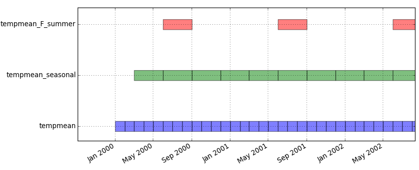
Ora visualizzeremo un'animazione con le temperature estive in North Carolina e ci sovrapporremo una mappa vettoriale contenente i confini degli stati ed una mappa raster di uno shaded relief (con semi-trasparenza). Prima di visualizzare le mappe impostiamo la tabella di colori per l'intera serie temporale.
t.rast.colors input=tempmean_F_summer color=byr
Avvia lo strumento Animazione e seleziona nuva animazione. Questa volta aggiungeremo più layers:
una serie temporale di temperature tempmean_F_summer, una mappa statica contenente i limiti
amministrativi boundary_county e una mappa raster statica in semi trasparenza (shaded relief)
shaded_state_500m. Le mappe raster e vettoriali sono presenti nel mapset PERMANENT.
Dopo aver aggiunto i layer ed averne impostato la trasparenza, verifichiamo che l'ordine sia corretto.
Screenshot instructions are here.
In aggiunta si può sovrappore una legenda con i valori delle temperature (come visto nelle precedenti
animazioni).
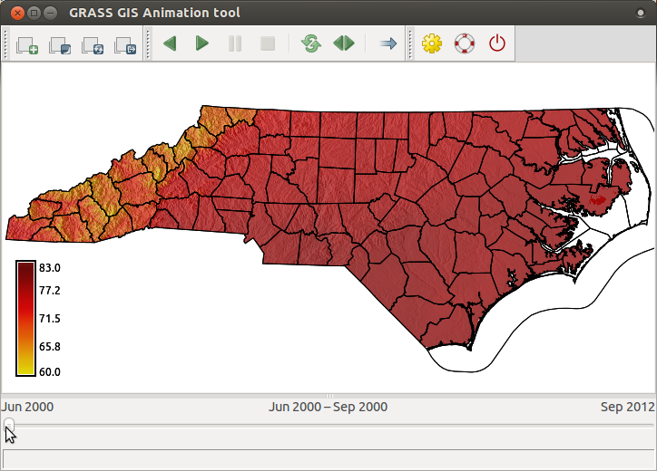
Effettuiamo la stessa aggregazione con il dataset dei dati di piogga, ma in un'altra maniera. Si aggreghino i dati utilizzando gli intervalli temporali di tempmean_F_summer. Convertiamoli da millimetri a pollici. Il risultato sarà la media delle piogge mensili estive espresse in pollici.
t.rast.aggregate.ds input=precip_sum sample=tempmean_F_summer output=precip_summer base=precip_summer method=average
t.rast.mapcalc inputs=precip_summer expression="precip_summer / 25.4" output=precip_inch_summer base=precip_inch_summer nprocs=4
Utilizzare il comando r.regression.series disponibile tra gli addon di GRASS. Se non è già installato, lo si può installare usando il comando g.extension:
g.extension extension=r.regression.series
A questo punto determiniamo la correlazione. Si noti che r.regression.series non accetta ancora un dataset di tipo spazio-temporale, ma solo mappe singole.
Eseguiamo g.mlist due volte: g.mlist type=rast pattern="tempmean_F_summer*" separator=comma --q g.mlist type=rast pattern="precip_inch_summer*" separator=comma --q ed utiliziamo gli output come input per i parametri xseries ed yseries del comando r.regression.series invece che i punti: r.regression.series xseries=... yseries=... output=corr method=corcoef# using backticks syntax for two g.mlist runs r.regression.series \ xseries=`g.mlist type=rast pattern="tempmean_F_summer*" separator=comma --q` \ yseries=`g.mlist type=rast pattern="precip_inch_summer*" separator=comma --q` \ output=corr method=corcoef
Impostiamo la mappa dei colori per la mappa raster corr al tipo differences.
r.colors map=corr color=differences
Analizziamo la mappa corr mostrandone i valori di correlazione
spaziale tra temperatura e piogga nel periodo estivo.
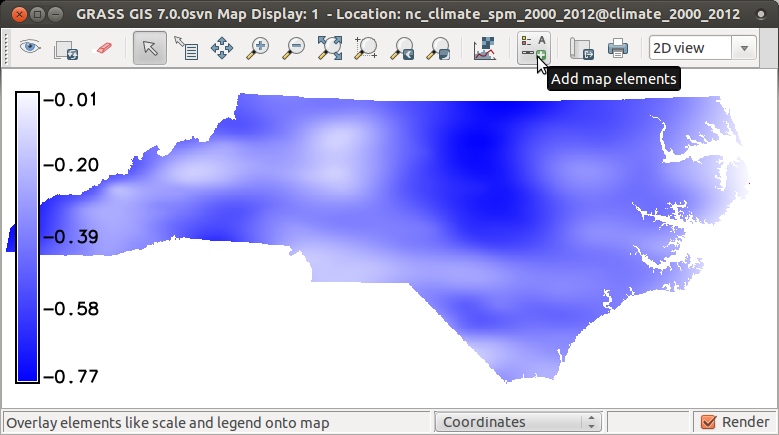Add raster map layer -> select corr Add map elements -> Show/hide legend# display raster maps d.rast corr d.legend corr
Visualizzare un grafico dei valori minimi e massimi per i periodi estivi. Prima creare un file contenente questi valori. Per semplificare le cose, incollare il seguente codice nel terminale (non nella console di comando della GUI, così non funziona).
# questo comando creerà il file nella cartella corrente t.rast.list input=tempmean_F_summer columns=start_time,min,max separator=comma > temperatures.txtEseguire t.rast.list con i seguenti parametri: tab Required > input > tempmean_F_summer tab Formatting > separator > comma tab Selection > columns > start_time,min,max Copiare l'output in un file e salvarlo con il nome temperatures.txt. Tener presente che per il prossimo passaggio, serve il percorso completo al file. Alcuni editor aggiungono di serie l'estensione .txt portando ad avere due estensioni che vengono mostrate in alcuni file manager.
Ora selezioniamo la console Python nella GUI ed incolliamo ed eseguiamo i seguenti comandi (riga per riga):
# ricordarsi di utilizzare il percorso completo al file
import matplotlib.pyplot as plt
plt.plotfile("temperatures.txt", cols=(0,1,2), delimiter=',', subplots=False)
plt.show()
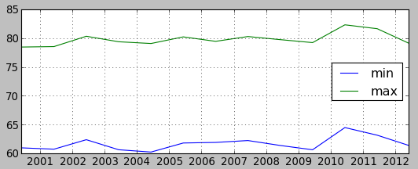
Ora disegneremo il grafico delle temperature di Raleigh ed Ashville. Nel mapset PERMANENT, si trova una un mappa vettoriale chiamata towns. Contiene due punti che rappresentano Raleigh e Ashville. Usando il comando t.vect.observe.strds, creeremo un dataset di tipo spazio-temporale con i valori delle temperature per queste due città archiviati nella tabella degli attributi:
t.vect.observe.strds input=towns strds=tempmean_F_summer output=towns_tempmean_summer vector_output=towns_summer column=tempmean
Now we list temperature values:
Eseguire t.vect.db.select ed ottenere i valori per Raleigh. Salvare il risultato in un file chiamato raleigh.txt: t.vect.db.select input=towns_tempmean_summer columns=tempmean separator=comma where="cat = 1" A questo punto selezionare i valori per Asheville e salvarli in un file chiamato asheville.txt: t.vect.db.select input=towns_tempmean_summer columns=tempmean separator=comma where="cat = 2"t.vect.db.select input=towns_tempmean_summer columns=tempmean separator=comma where="cat = 1" > raleigh.txt t.vect.db.select input=towns_tempmean_summer columns=tempmean separator=comma where="cat = 2" > asheville.txt
Creare un grafico di questi valori utilizzando matplotlib, incollando nella console Python della GUI (questo è solo un esempio base per evitare codice più complesso):
import matplotlib.pyplot as plt
plt.plotfile("raleigh.txt", cols=(0,2), delimiter=',', subplots=False)
plt.plotfile("asheville.txt", cols=(0,2), delimiter=',', subplots=False, newfig=False)
plt.show()
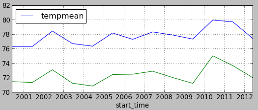
t.create output=NagsHead_99_08 type=strds temporaltype=relative title="Nags Head elevation series" description="from 1999 to 2008 with gaps"
Registrare le mappe nel dataset utilizzando l'elenco qui di seguito. Ciascuna mappa contiene nel nome l'anno ed il delimitatore di default è il pipe.
Nella finestra di t.register incollare il seguente elenco nello spazio dove vanno inserite le mappe: NH_1999_1m|1999 NH_2001_1m|2001 NH_2004_1m|2004 NH_2005_1m|2005 NH_2007_1m|2007 NH_2008_1m|2008 In più impostare le seguenti opzioni: tab Input > input > NagsHead_99_08 tab Time Date > unit > yearsecho "NH_1999_1m|1999 NH_2001_1m|2001 NH_2004_1m|2004 NH_2005_1m|2005 NH_2007_1m|2007 NH_2008_1m|2008" > NH.txt t.register input=NagsHead_99_08 type=rast file=NH.txt unit=years
Visualizzando l'estensione temporale mediante lo strumento Timeline, si nota che ogni mappa è stata registrata nel dataset e che ci sono degli anni senza dato.
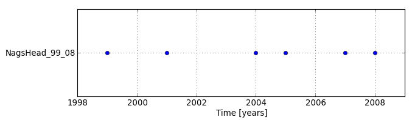
Visto che ci sono dei dati mancanti nel dataset, decidiamo di interpolari i dati mancanti. Le mappe derivanti dall'interpolazione sono già presenti nel mapset così tralasceremo. (Le mappe sono state generate mediante interpolazione lineare con il comando r.series.interp. Per intervalli si può utilizzare t.rast.gapfill).
Dobbiamo ancora registrare le mappe interpolate all'interno del dataset esistente.
Nella finestra di t.register, utilizzare l'input interettivo per l'opzione relativa ai file. Utilizzare i parametri di input > NagsHead_99_08 and unit > years. Di seguito l'elenco delle mappe da registrare compreso anche il time stamps: NH_2000_1m_interp|2000 NH_2002_1m_interp|2002 NH_2003_1m_interp|2003 NH_2006_1m_interp|2006echo "NH_2000_1m_interp|2000 NH_2002_1m_interp|2002 NH_2003_1m_interp|2003 NH_2006_1m_interp|2006" > interp.txt t.register input=NagsHead_99_08 file=interp.txt unit=years
Verificare quello che è presente all'interno del dataset NagsHead_99_08. Assegnare la stessa tabella dei colori per tutte le mappe (copiarla dalla mappa NH_1999_1m).
t.rast.list input=NagsHead_99_08
t.rast.colors input=NagsHead_99_08 raster=NH_1999_1m
Visualizzare un'animazione del dataset raster spazio-temporale NagsHead_99_08, prima solo in 2D.
Nel menù principale scegliere Temporal > > GUI tools > Animation tool.g.gui.animation strds=NagsHead_99_08
Possiamo anche visualizzare animazioni 2D e 3D affiancate. Per visualizzare animazione in 3D, dobbiamo prima prepare e registrare i parametri 3D. Per farlo, avviare la GUI se non è già avviata, aggiungere per esempio NH_1999_1m, attivare la vista 3D, impostare la vista come desiderato ed il parametro fine resolution ad 1m (consultare il manuale della GUI) e salvare lo spazio di lavoro su un file (nel menu File -> Workspace -> Save). Nello strumento Animazione, aggiungere un'animazione, scegliere la modalità 3D, scegliere il file di spazio di lavoro e laciare elevation_map come parametro da animare. Nota: lo strumento di animazione 3D (così come il comando seguente m.nviz.image), non sono supportati su MS Windows.
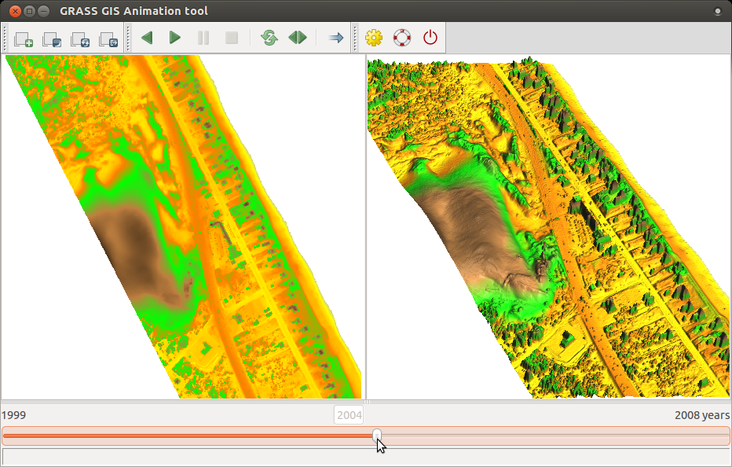
Nota a margine: per script o per lavorare dalla linea di comando, si possono salvare le impostazioni 3D come comando m.nviz.image usando il bottonre presente nel GIS Layer manager (seconda riga) chiamato 'Genera comando per m.nviz.image'. Di seguito un esempio del comando salvato:
m.nviz.image elevation_map=NH_1999_1m -a mode=fine resolution_fine=1 color_map=NH_1999_1m position=0.94,0.87 height=789 perspective=15 twist=0 zexag=2.000000 focus=487,469,8 light_position=0.68,-0.68,0.80 light_brightness=80 light_ambient=20 light_color=255:255:255 output=nviz_output format=ppm size=718,699
Il cubo spazio-tempo è una rappresentazione 3-dimensionale dove la coordinata z è il tempo. Useremo un raster 3D per rappresentare il cubo spazio-tempo con la coordinata z come il valore del raster 3D.
Per creare il cubo spazio-tempo sovrapporremo verticalmente una serie di modelli digitali del suolo usando il comando t.rast.to.rast3.
t.rast.to.rast3 input=NagsHead_99_08 output=NagsHead_99_08
# verificare l'estensione 3d ed i valori minimi e massimi
r3.info -g map=NagsHead_99_08
# impostare la regione a questo raster così da usarla per le successive elaborazioni
g.region rast3d=NagsHead_99_08 -p3
Ora creeiamo un nuovo raster 3D che sarà usato per colorare la isosuperfici a seconda dell'anno. Usando t.rast.mapcalc creiamo una serie di mappe raster aventi un solo valore per ciascun anno e sovrapponiamole in un raster 3D ed associamo una tabella dei colori adatta.
t.rast.mapcalc inputs=NagsHead_99_08 expression="start_time() + 1999" output=NagsHead_years basename=NagsHead_years nprocs=4
t.rast.to.rast3 input=NagsHead_years output=NagsHead_years
# set color table of the space-time cube 3D raster and the second 3D raster
r3.colors map=NagsHead_99_08 color=elevation
r3.colors map=NagsHead_years color=bcyr
Ora visualiziamo il cubo spazio-tempo in 3D. Seguiamo le istruzioni seguenti: Now we will display the space-time cube in 3D. Follow the instructions below:
# abbassare la risoluzione per visualizzare il rendering
g.region -p3 res3=3 tbres=1
# prima aggiungiamo alla vista 3D il DEM del 2008 che è stato diviso per 20 per finalità di visualizzazione
# perchè noi dobbiamo usare una grande esagerazion verticale per il raster 3D
Add raster map layer -> select NH_2008_1m_0.05
Add various raster map layers -> Add 3D raster map layer -> select NagsHead_99_08
Right click on 3D raster -> Zoom to selected map
Incollare il comando d.legend nella console della GUI:
d.legend -f rast3d=NagsHead_years at=5,50,7,10 use=1999,2000,2001,2002,2003,2004,2005,2006,2007,2008
Switch to 3D view (be patient)
On View page, set z-exaggeration to 20 and view height to 100.
On Data page -> Surface, lower fine mode resolution to 1
On Data page -> Volume, add isosurface e quindi cambiare il valore a 11 o simili e cambiare il colore
per utilizzare NagsHead_years. Impostare la risoluzione della superficie iso a 1.
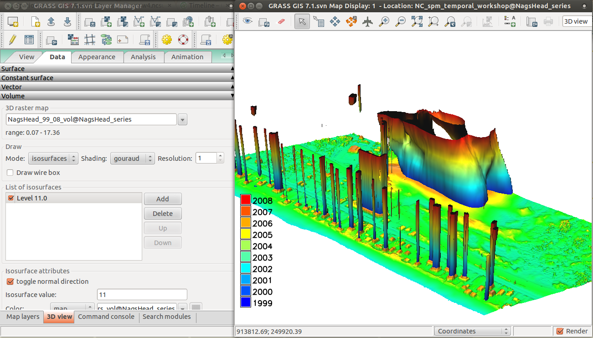
Avviare GRASS con la location NC_spm_temporal_workshop ed il mapset centennial.
Calcoleremo la radiazione solare giornaliera per una parte del Campus Centennial della NC State University. Quindi visualizzeremo la variazione di radiazione solare come animazione 3D. Nel caso non sia installato r.sun.hourly, scaricarlo:
g.extension extension=r.sun.hourly
Convertire la data di oggi (o qualsiasi altra data) in giorni dell'anno eseguendo questo comando nella shell di Pyhon presente nella GUI.
from datetime import datetime
datetime.now().timetuple().tm_yday
# oppure per un giorno qualsiasi (ad esempio 21/06/2014)
datetime.datetime(2014, 6, 21).timetuple().tm_yday
Questo valore verrà utilizzato per il parametro day.
Generare la serie temporale dell'irradianza mediante il seguente comando.
La serie temporale verrà automaticamente salvata all'interno dei un dataset spazio-temporale di tipo raster.
r.sun.hourly -t elev_in=elev_lid_small start_time=6 end_time=20 day=200 year=2014 beam_rad_basename=beam nprocs=4
Impostare una tabella dei colori per il dataset beam appena creato;
Utilizzando la finestra di inpute dell'interfaccia del comando t.rast.colors oppure aggiungengo le righe seguenti ad un file rules.txt: 0% 60:60:60 70% yellow 100% 255:70:0 t.rast.colors input=beam rules=rules.txtecho "0% 60:60:60 70% yellow 100% 255:70:0" > rules.txt t.rast.colors input=beam rules=rules.txt
Finalmente creiamo l'animazione 3D della serie temporale. Per fare questo prima di tutto aggiungiamo, ai layer
visibili, la mappa elev_lid_small. Passiamo alla visuale 3D e modifichiamo i parametri
di visualizzazione a piacere. Modifichiamo i colori utilizzando una delle mappe di radiazione
solare (fare riferimento al manuale della GUI).
A questo punto salviamo il file di configurazione del workspace.
Avviamo lo strumento di animazione ed aggiungiamo una nuova animazione. Scegliamo 3D, aggiungiamo il dataset
spazio-temporale calcolato, selezioniamo il file del workspace e scegliamo color_map per il tipo di animazione.
Da notare che l'animazione 3D non è supportata in MS Windows.
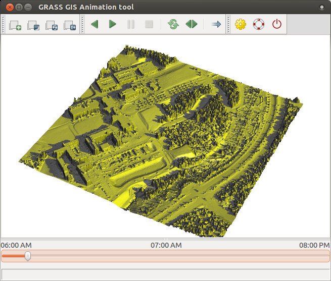
Ultima modifica: 2014-08-13 22:00
Indice del manuale di GRASS GIS | Indice dei moduli Temporali | Indice degli argomenti | Indice della parole chiave | Indice completo

Spatio-temporal data handling and visualization in GRASS GIS workshop for FOSS4G 2014
by Vaclav Petras, Anna Petrasova, Helena Mitasova and Markus Neteler
is licensed under a Creative Commons Attribution-ShareAlike 4.0 International License.
Versione Italiana di Luca Casagrande
{kind=link}